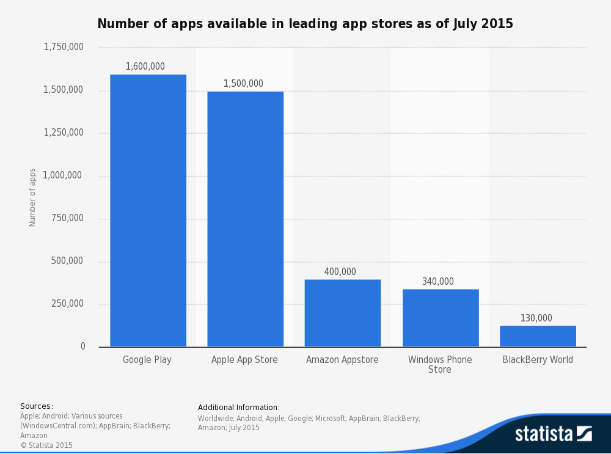
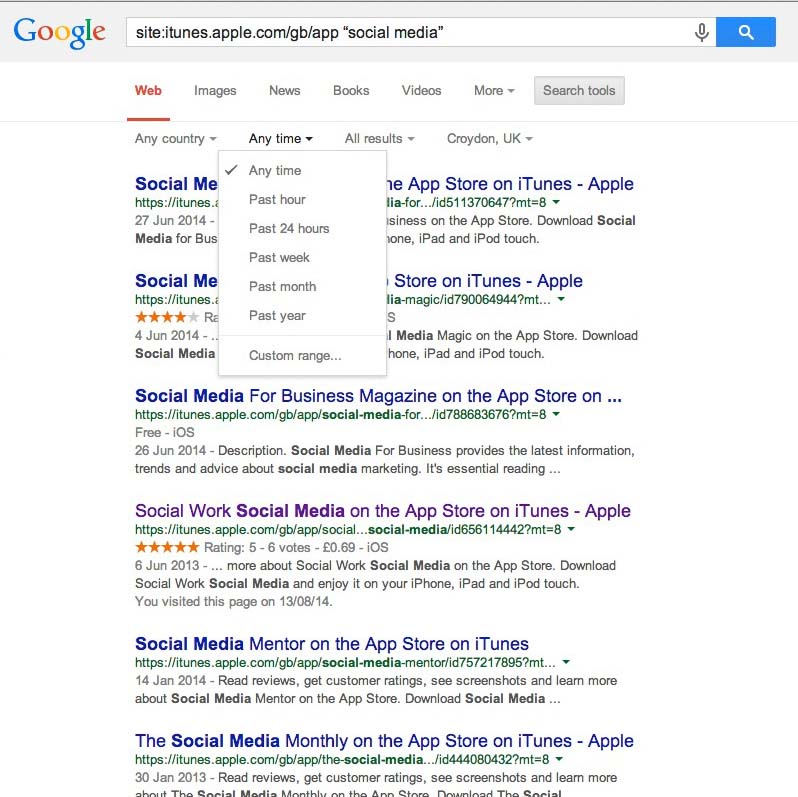
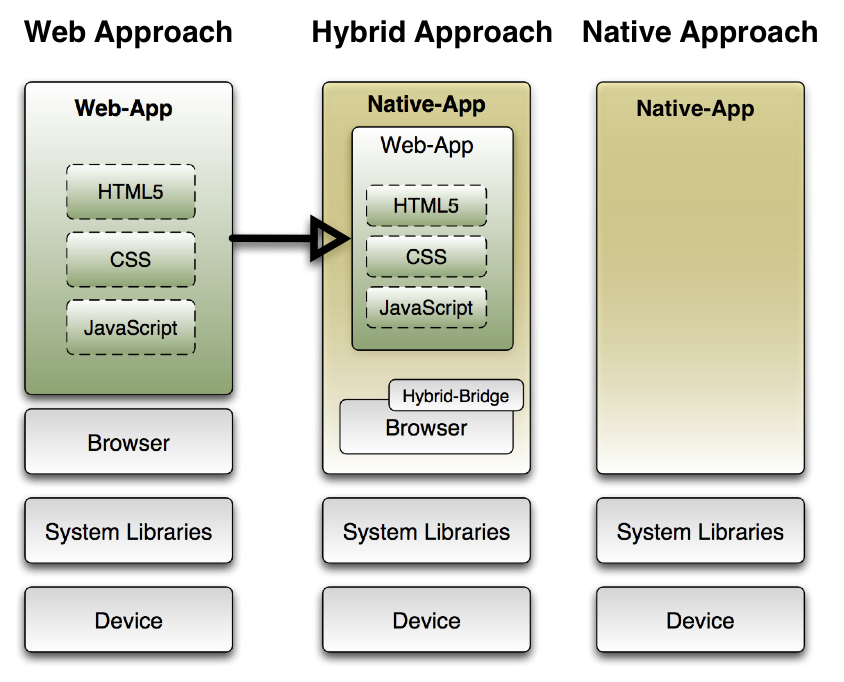
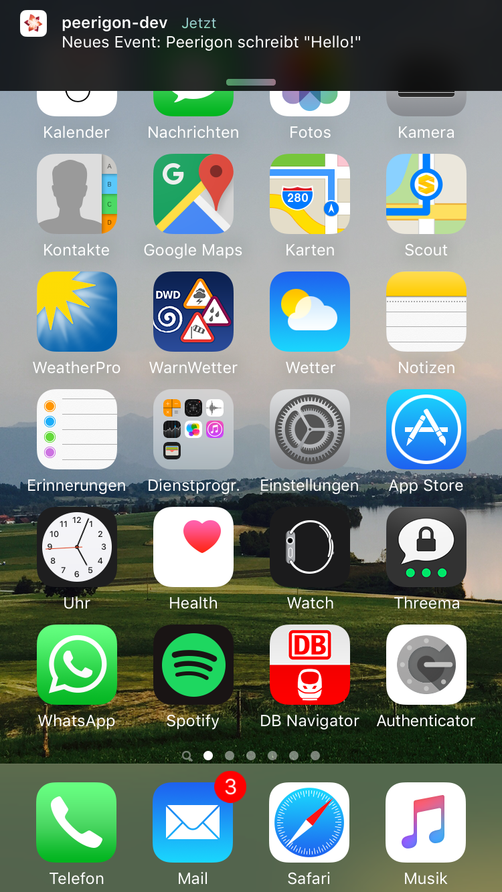

name: cover <img src="assets/img/peerigon.svg" style="width: 20vw; margin-top: 5vh;"> # Native Apps Are Deprecated .slide-cover[ State of Mobile Web<br> ] .slide-author[ Michael Jaser<br> michael.jaser@peerigon.com ] --- layout: true class: center, middle .slide-header-left[ Native Apps Are Deprecated ] .slide-header-right[ Mobile Day ] --- # Michael Jaser - Bachelor Thesis about "Cross Mobile Apps" at IBM - Co-Founder Peerigon GmbH - Teaching Node.js at the University of Applied Sciences Augsburg --- <img src="assets/img/peerigon-devices.png" style="height: 80vh; margin-top: 1rem; margin-bottom: -1rem"/> --- - Mobile App - Pure JavaScript, HTML & CSS - Node.js Backend - Privacy! - No Ads! See [peerigon.com](https://peerigon.com) --- <img src="assets/img/peerigon.svg" style="height:40vh;" /> - Web Consulting Company - Web / Mobile Web / Hybrid / Backends - JavaScript / Node.js / all kinds of Databases - Traninings - Software Development --- # Agenda - Mobile Web Recap - Biased view on the Web - Marketplaces vs. Open Web - Hybrid Apps - Future of Apps - Conclusion --- # 1. Definition of Terms --- ## Mobile Web >"The mobile Web refers to the use of browser-based Internet services from handheld mobile devices, such as smartphones or feature phones, through a mobile or other wireless network." <small>https://en.wikipedia.org/wiki/Mobile_Web</small> --- ## Mobile Browser >"A mobile browser is a web browser designed for use on a mobile device such as a mobile phone or PDA. Mobile browsers are optimized so as to display Web content most effectively for small screens on portable devices." <small>https://en.wikipedia.org/wiki/Mobile_browser</small> --- ## Web App >"In computing, a web application or web app is a client-server software application in which the client (or user interface) runs in a web browser." <small>https://en.wikipedia.org/wiki/Web_application</small> --- ## Mobile Web App - Touch - Small Screens --- ## Web App vs. Website - Web Apps are dynamic applications with heavy interaction - Websites are mostly static sites rendered on the Server --- ## Single Page Application - Single HTML File - UI handled via JavaScript - decoupled from Backend - loading data from Backend via AJAX/WebSockets --- # 2. Mobile Web Recap --- ## 1994 <img src="assets/img/Apple_Newton_PocketWeb.jpg" style="height: 60vh; margin-top: 1rem; margin-bottom: 1rem"/><br> <small>http://www.teco.edu/pocketweb/</small> --- <img src="assets/img/pocketWeb.gif" style="height: 60vh; margin-top: 1rem; margin-bottom: 1rem"/><br> <small>http://www.teco.edu/pocketweb/</small> --- ## Not much... <img src="./assets/img/boring.gif" /> <small>http://giphy.com/gifs/the-simpsons-school-bart-XuDlhFtiWXZEk</small> --- ## 2007 --- ## iPhone <iframe width="420" height="315" src="https://www.youtube.com/embed/8Vq993Td6ys" frameborder="0" allowfullscreen></iframe> <!--<video src="./assets/Safari%20-%20iPhone%20Development%20Platform-8Vq993Td6ys.mp4" />--> <small>https://www.youtube.com/watch?v=8Vq993Td6ys</small> --- >“Developers and users alike are going to be very surprised and pleased at how great these applications look and work on iPhone,” said Steve Jobs, Apple’s CEO. “Our innovative approach, using Web 2.0-based standards, lets developers create amazing new applications while keeping the iPhone secure and reliable.” <small>http://www.apple.com/pr/library/2007/06/11iPhone-to-Support-Third-Party-Web-2-0-Applications.html</small> --- ## 2008 --- ## Android <img src="assets/img/android-robot.svg"> --- ## [And there are more...](https://en.wikipedia.org/wiki/Mobile_operating_system) - Fire OS (Amazon) - Windows Phone - Sailfish OS - Firefox OS - Ubuntu Touch OS - ... --- >"In 2014, more than a billion smartphones were sold and global market share was 80.7% for Android, 15.4% for iOS, 2.8% for Windows Phone and remaining 1.1% for all other platforms." <small>http://www.gartner.com/newsroom/id/2996817</small> --- <img src="./assets/img/ios-logo.svg" style="height:35vh;"/><br> <img src="./assets/img/android-robot.svg" style="height:45vh;" /> --- # Mobile Browsers --- ## What is a browser? --- ## Browser Architecture <img src="./assets/img/browser-architecture.png" /> <small>http://www.html5rocks.com/en/tutorials/internals/howbrowserswork/</small> --- ## Rendering Engine >The responsibility of the rendering engine is well... Rendering, that is display of the requested contents on the browser screen. - HTML - CSS - Images <small>http://www.html5rocks.com/en/tutorials/internals/howbrowserswork/</small> --- ## JavaScript Engine - JavaScript Interpreter - parses and executes JavaScript code - implement ECMA-Script (5, 2015, 2016...) --- ## [Web APIs](https://developer.mozilla.org/en-US/docs/WebAPI) >"WebAPI is a term used to refer to a suite of device compatibility and access APIs that allow Web apps and content to access device hardware (such as battery status or the device vibration hardware), as well as access to data stored on the device (such as the calendar or contacts list)." <small>Formerly known as HTML5</small> --- ## [Web APIs](https://developer.mozilla.org/en-US/docs/WebAPI) - "Standard Library" - Bridge to the Operation System - accessible via JavaScript - implemented by the Browser - i.e. `AJAX`, `window`, `console.log` --- Browser = pretty complex but powerful platform --- ## Which Mobile Browsers do we have? --- ## Android --- <img src="./assets/img/android-browser.png" style="height:20vh;"/> __Android Browser__ [RIP](http://www.unwiredview.com/2013/11/21/android-4-4-kitkat-ships-without-browser-app-oems-have-to-license-chrome-or-build-their-own/)<br> <small>1.0 - 4.3 (2008 - 2013)</small> <img src="./assets/img/chrome-android.svg" style="height:20vh;"/> __Google Chrome__ <br> <small>since 4.1 (June 2012)</small> --- ## iOS --- <img src="./assets/img/safari-ios.svg" style="height:30vh;" /> __Mobile Safari__ --- ## What do they have in common? --- <img src="./assets/img/webkit-logo.png" /> Well... there __was__ WebKit! --- ## WebKit >WebKit is an open source rendering engine which started as an engine for the Linux platform and was modified by Apple to support Mac and Windows. See webkit.org for more details. --- ## Till 2013 __Safari__ - WebKit - JS-Engine: JavaScriptCore __Chrome__ - WebKit - JS-Engine: ~~JavaScriptCore~~ V8 --- ## 2013: WebKit vs. Blink <small>http://www.gifbay.com/gif/thunderstorm-60115/</small> - [Google forked WebKit](http://arstechnica.com/information-technology/2013/04/google-going-its-own-way-forking-webkit-rendering-engine/) 2013 - the Project is called [Blink](http://www.chromium.org/blink) - used by Chromium, Chrome, Opera, ... --- ## Safari & Chrome diverged __Safari__ - WebKit - JavaScriptCore __Chrome__ - ~~WebKit~~ Blink - ~~JavaScriptCore~~ V8 --- ## Comparison __Chrome__: Blink - [CSS](http://caniuse.com/#cats=CSS): 74% - [HTML5](http://caniuse.com/#cats=HTML5): 77% - [JS: ES2015](https://kangax.github.io/compat-table/es6/) 63% __Safari__: WebKit - [CSS](http://caniuse.com/#cats=CSS): 68% - [HTML5](http://caniuse.com/#cats=HTML5): 66% - [JS: ES2015](https://kangax.github.io/compat-table/es6/) 54% --- ## Web APIs __Chrome__: [78%](http://caniuse.com/#cats=JS%20API) __Safari__: [50%](http://caniuse.com/#cats=JS%20API) __Firefox__: [83%](http://caniuse.com/#cats=JS%20API) <small>http://caniuse.com/#cats=JS%20API</small> --- <img src="./assets/img/mobile-web-stats.png" /> --- ## Fragmentation <img src="./assets/img/ios-android-comparison.png" style="width: 100vw;" /> <small>http://thenextweb.com/insider/2015/08/05/this-is-what-android-fragmentation-looks-like-in-2015/</small> --- ## Summary - Focus on Mobile Chrome and Mobile Safari - Legacy support is painful - Android Fragmentation is a problem - [Safari is the new IE since Google dropped WebKit](http://nolanlawson.com/2015/06/30/safari-is-the-new-ie/) --- <blockquote class="twitter-tweet" lang="de"><p lang="en" dir="ltr">If Apple are throttling back on web platform work in Safari, I wish they'd allow other browsers on iOS so someone else can have a go</p>— Jake Archibald (@jaffathecake) <a href="https://twitter.com/jaffathecake/status/612992537238896641">22. Juni 2015</a></blockquote> --- # 3. A biased view on the Web <img src="./assets/img/netscape.gif" /> --- ## The Web is slow --- ## How fast is JavaScript? TL;DR: _Very_ fast ...it doesn't matter, because JS is not the bottleneck --- ## ASM.js - efficient subset of JavaScript - suitable for ahead of time optimizing compilation --- ## Emscripten - LLVM to JavaScript compiler (to ASM.js) - compile C++ into JS and use it on the web - see http://www.quakejs.com/ --- <img src="assets/img/bananabread.jpg" style="height: 90vh"/> <small>https://developer.mozilla.org/demos/detail/bananabread</small> <small>https://github.com/kripken/emscripten/wiki/Porting-Examples-and-Demos</small> --- ## The UI is slow --- ## 300 ms Click Delay <iframe width="760" height="428" src="https://www.youtube.com/embed/AjUpiwvIa5A" frameborder="0" allowfullscreen></iframe> --- ## 300 ms Click Delay - recognize tap vs. double-tap - added 300 ms delay - removed in "App Mode" on Mobile Chrome - Libraries like fastclick can be used to solve the problem --- ## Rendering is slow --- - DOM access is slow - Images are slow and use precious RAM --- ## Take care of your rendering - optimize Images - take care of your CSS - use accelerated Animations --- ## The UI is not "native" --- - there are Frameworks for "native" styling - Consistency within of the App is more important than of the Platform - Take care of platform specific features - i.e Context Menu on Android --- ## "Fast" depends heavily on your Architecture <small>http://sploid.gizmodo.com/drone-captures-demolition-of-an-old-building-1718372270</small> --- ## Use Web Workers - runs scripts in background thread - doesn't block the main thread execution (UI) --- ## Reduce Load Time - add Caching - add Compression - add Lazy Loading --- ## Choose the right Tools - keep it simple - avoid bloated Frameworks (i.e. bootstrap) - use only what you really need - i.e. DOM Features instead of jQuery - Polyfill on Demand --- ## Developing for the Web in pain! --- ## Not anymore! There are great IDEs --- ## Atom <img src="./assets/img/atom.png" style="width: 90vw;"/> --- ## WebStorm <img src="./assets/img/webstorm.png" style="height: 70vw;"/> --- ## Debugging is painful --- ## Nope. - Web Inspector - Universal Inspector (Firefox) --- <img src="./assets/img/inspector-1.png" style="height: 120vh;" /> --- <img src="./assets/img/inspector-2.png" style="height: 120vh;" /> --- <img src="./assets/img/inspector-3.png" style="height: 120vh;" /> --- <img src="./assets/img/inspector-remote.png" style="height: 120vh;" /> --- ## Everything is inline... --- ## You can make it _Modular_ ```javascript import "../shared/styles/main.less"; import React from "react"; import Router from "react-router"; import { cookie } from "browser-cookie-lite"; import { isDev, isStage } from "../shared/lib/env" import routes from "../shared/routes"; import PiwikHelper from "../shared/lib/PiwikHelper"; import ContextProvider from "../shared/components/ContextProvider"; import determineLocale from "../client/lib/determineLocale"; ``` --- ## and use _ES 2015_ ```javascript const context = { lang: determineLocale(), page: () => resolvePageFromPath(document.location.pathname) }; const Client = ( <ContextProvider {...context}> {() => <Router history={createBrowserHistory()} routes={routes} />} </ContextProvider> ); PiwikHelper.init(cookie, cookie); if (!PiwikHelper.isDeclined()) { Piwik .init(PiwikHelper.instanceUrl, PiwikHelper.getSiteId()) .loadScript() .catch((err) => () => { if (isDev || isStage) { throw err; } }); } React.render(Client, document.body); ``` --- ## Web-Apps can't be used offline --- ## Yes we can! - Application Manifest - ServiceWorker - LocalStorage / SessionStorage - IndexedDB --- <video src="assets/service-worker.mp4" style="height:150vh" controls="true" /> --- ## And there is ServiceWorker - proxy server that sits between app and the browser - intercept network requests and customize responses - easy way to handle caching - granular control over actions --- ```javascript this.addEventListener('install', function(event) { event.waitUntil( caches.open('v1').then(function(cache) { return cache.addAll([ '/sw-test/', '/sw-test/index.html', '/sw-test/style.css', '/sw-test/app.js', '/sw-test/image-list.js', '/sw-test/star-wars-logo.jpg', '/sw-test/gallery/', '/sw-test/gallery/bountyHunters.jpg', '/sw-test/gallery/myLittleVader.jpg', '/sw-test/gallery/snowTroopers.jpg' ]); }) ); }); ``` --- ```javascript this.addEventListener('fetch', function(event) { var response; event.respondWith(caches.match(event.request).catch(function() { return fetch(event.request); }).then(function(r) { response = r; caches.open('v1').then(function(cache) { cache.put(event.request, response); }); return response.clone(); }).catch(function() { return caches.match('/sw-test/gallery/myLittleVader.jpg'); })); }); ``` --- ## I can't access .... --- ## Camera --- ## [Mediacapture Stream](http://www.w3.org/TR/mediacapture-streams/) <img src="assets/img/video.png" style="height:100vh;"/> --- ## Geolocation <img src="assets/img/geolocation-permission.png" /> --- <img src="assets/img/geolocation-map.png" /> --- ## Crypto --- ## WebCrypto ```javascript window.crypto.subtle.generateKey( { name: "AES-CMAC", length: 256, //can be 128, 192, or 256 }, false, //whether the key is extractable (i.e. can be used in exportKey) ["sign", "verify"] //can be any combination of "sign" and "verify" ) .then(function(key){ //returns a key object console.log(key); }) .catch(function(err){ console.error(err); }); ``` --- ## Notifications --- ## [Notifications API](https://developer.mozilla.org/en-US/docs/Web/API/Notifications_API) <video src="assets/notifications.mp4" controls="true" style="height: 120vh;" /> --- ## But i can't send Push Notifications --- ## Not yet, but hopefully soon - Proposed as a feature of ServiceWorkers - there are working Demos for Firefox & Chrome --- ```javascript self.addEventListener('push', function(event) { console.log('Received a push message', event); var title = 'Yay a message.'; var body = 'We have received a push message.'; var icon = '/images/icon-192x192.png'; var tag = 'simple-push-demo-notification-tag'; event.waitUntil( self.registration.showNotification(title, { body: body, icon: icon, tag: tag }) ); }); ``` --- ## I can't do stuff in the background while the app is closed --- ## Not yet, but hopefully soon --- ## Permissions? - your Browser asks you when on first access! <img src="assets/img/notification-bubble.png" /> --- ## I can't access the AppStore/PlayStore well... --- # 4. Marketplaces vs. Open Web <img src="assets/img/walled-garden.gif" /> <small>http://fuckyeahreactiongifs.tumblr.com/post/9041021691</small> --- ## Do you really like the Marketplaces? --- ## Censoring >“The Chaos Computer Club in Frankfurt developed a tvOS application to bring talks from its media.ccc.de portal to Apple TV. Apple refused to release the app and took offense at the content.” <small>https://unthoughted.wordpress.com/2015/10/31/apple-verbietet-inhalte-vom-chaos-computer-club-auf-ihrer-plattform/</small> --- ## "Angels Share" - You get 70% of sales revenue. - This means: Apple get's 30 % <small>https://developer.apple.com/programs/whats-included/</small> --- ## Review Process / Painful Updates <img src="assets/img/boring-2.gif" /> - takes up to a week - on every update <small>http://www.reddit.com/r/AskReddit/comments/r98mk/reddit_what_is_your_favorite_reaction_gif/</small> --- ## How should they find your App? ---  --- ## Google?  --- ## But i can make money! <small>http://film-instant.tumblr.com/post/4533877893/robin-hood-1973</small> --- ## The truth... - Marketplaces are a convenient way for selling Apps --- ## But... - many Apps are for free - Subscription are usually sold differently - i.e. Netflix, Spotify - do you really want to share your revenue? --- ## "Security" by Reviews __True__, but it comes with the burden of... - censorship - shipping delays - critical issues due to pending reviews --- # 5. Hybrid Apps <img src="./assets/img/hybrid-car.gif" /> --- ## Or.. I trust in the Web, but have some nice things that the web can't offer me yet across all devices. --- ## Definition of Terms II --- <img src="./assets/img/google-webapps.png"/> <small>>http://developer.android.com/guide/webapps/index.html</small> --- ## Hybrid App - Native App with a WebView - WebView contains your Web App ---  --- ## Hosted Web-App >A hosted app is an Open Web App that has all of its resources (HTML, CSS, JavaScript, app manifest and so on) stored on a Web server. <small>https://developer.mozilla.org/en-US/Marketplace/Options/Hosted_apps</small> --- ## Packaged Web-App >A packaged app is an Open Web App that has all of its resources (HTML, CSS, JavaScript, app manifest, and so on) contained in a zip file, instead of having its resources on a Web server. <small>https://developer.mozilla.org/en-US/Marketplace/Options/Packaged_apps</small> --- ```javascript document.addEventListener("deviceready", function () { if (!window.plugins || !window.plugins.pushNotification) { pushReady.reject(new Error("Missing PhoneGap Plugin: PushNotification")); } else { pushReady.resolve(); } //handle app open via intents (cold start and reactivate from background) handleAndroidOpen(); document.addEventListener("pause", require("./pause")); document.addEventListener("resume", require("./resume")); backButton.enable(); }, true); ``` ---  --- ## Pros - Access to Marketplaces - Access to native device capabilities - Consistent WebView --- ## Cons You also get the __bad__ Parts of the Platform - Reviews - Censoring - Angels Share - more complicated distribution --- ## Different WebViews? You depend on the default WebView of the OS. - Android Stock Browser till Android 4.4 - Slow - Outdated - Fragmented --- ## Enter Crosswalk - WebView based on Chromium - aligned with Chrome for Android - up to date - full featured WebView - can be used easily as of Cordova 4.x --- ## Install Crosswalk ```shell npm install -g cordova cordova create hello com.example.hello HelloWorld cd hello cordova platform add android cordova plugin add cordova-plugin-crosswalk-webview cordova build android ``` --- ## And iOS? - Crosswalk is extending WKWebView - just some more features but still the same WebView - WKWebView is faster and can be extended --- ## But there is a downside <img src="assets/img/boxed-browser.gif" /> - you bundle a Browser with your App - big App size! <small>http://funnycutegifs.com/post/35623105723/moar-gifs-here</small> --- # 6. The Future of Apps <video src="assets/fxos.mp4" controls="true" style="width: 80vw;"/> --- ## Break the Walls! - No more Marketplaces - Install Apps straight from the Web --- ## [Web App Manifest](http://www.w3.org/TR/appmanifest/) ```json { "name": "peerigon", "description": "be together", "launch_path": "/", "developer": { "name": "peerigon", "url": "https://peerigon.com" }, "icons": { "128": "icon.png" } } ``` --- ## No more proprietary APIs - use WebAPIs for everything - write your Apps only once --- ## Multi Device Support out of the Box - Smartphone - Tablet - TV - Watch - your Fridge... - and whatever comes next --- ## Instant Updates - no more censoring - no more delays - instant updates for everyone --- # What's missing? --- ## Mobile Web Payment Provider - WebApi to access OS Payment Gateway? - FxPay, MozPay - PayPal? --- ## Faster WebAPI Adoption - please contribute to WebKit - more frequent Browser Updates --- # 7. Conclusion --- ## What should you do? <small>http://southpark.cc.com/</small> --- ## Web first! - the Web is ready for most Apps - have an App before you even know the platform - Open Web FTW! --- ## Go Hybrid if needed - access Marketplaces - access OS capabilities like Push Notifications - consistent WebView (Crosswalk) _till the Web catches up..._ --- >"Maybe I’m an idealist, but I think we should be able to build most apps with web tech. The platform has come a long way" Henrik Joreteg (@HenrikJoreteg) --- ## One more thing... <small>http://www.tumblr.com/</small> --- ## What do you prefer? - 3 Java Developers - 3 Objective-C / Swift Developers or - 6 Web Developers for every Platform --- ## Time to learn JavaScript! --- ## Nodeschool --- <br> - [JavaScript](https://www.hs-augsburg.de/fakultaet/informatik/studium/wahlpflichtveranstaltung/javascript/index.html) - [Node.js](https://www.hs-augsburg.de/fakultaet/informatik/studium/wahlpflichtveranstaltung/web_entwicklung_node_js/index.html) --- <img src="assets/img/peerigon.svg" style="height:40vh;" /> - Starter Kits - Consulting - Development --- # Thank you michael.jaser@peerigon.com <br> <br> @mmeaku <br> @peerigon